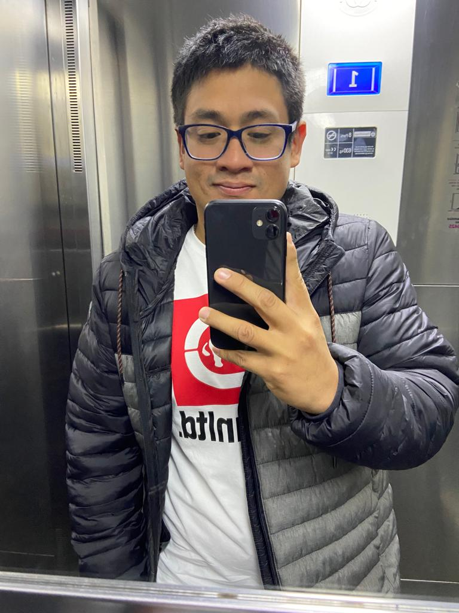
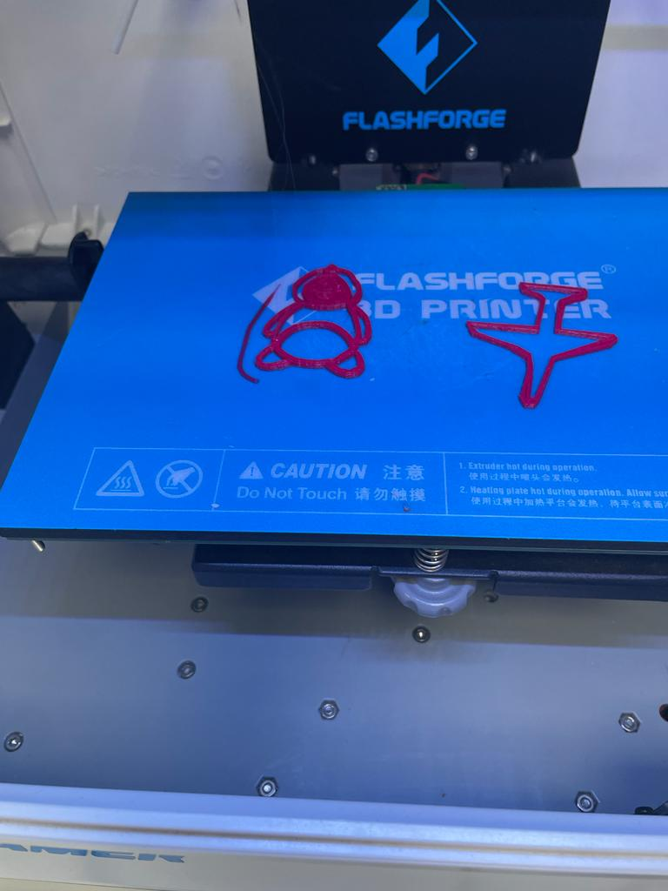
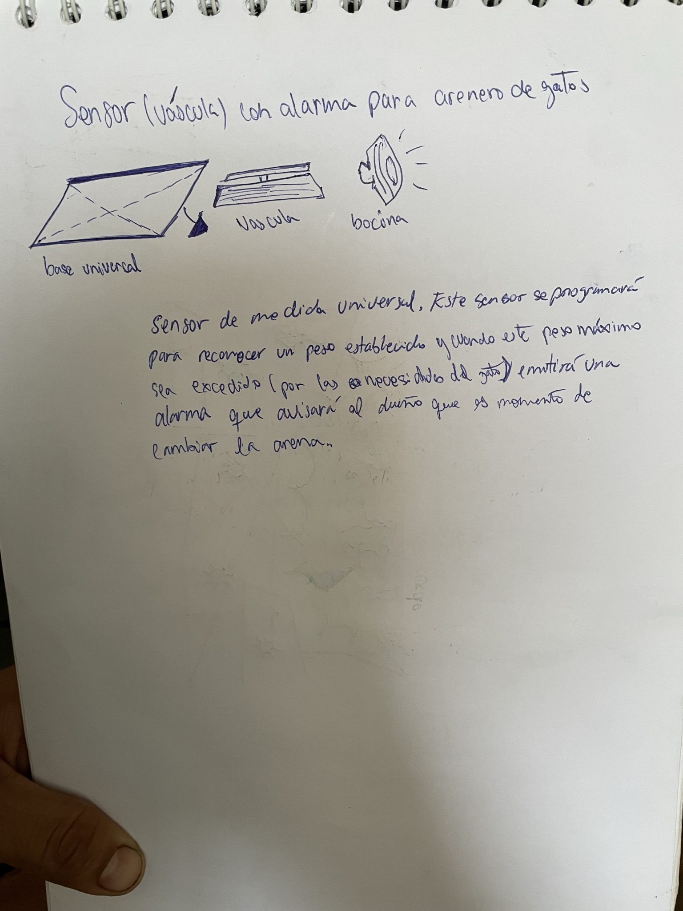
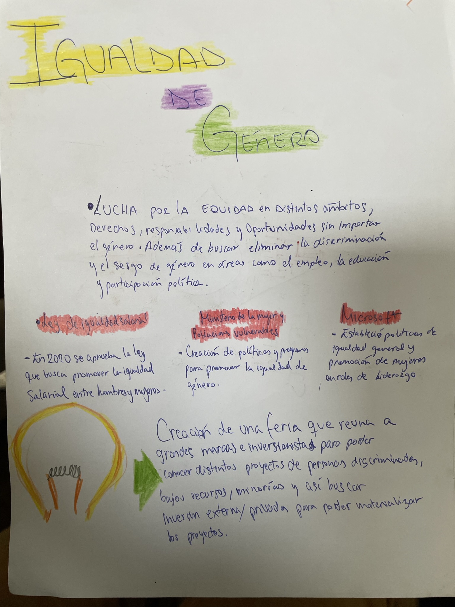
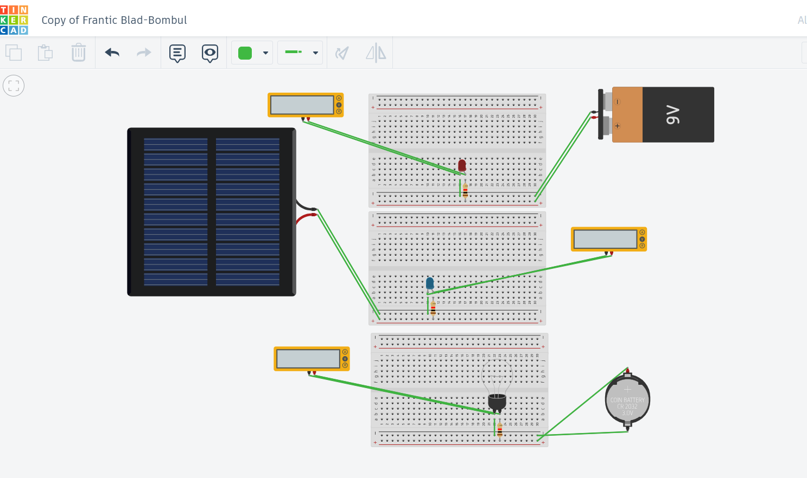
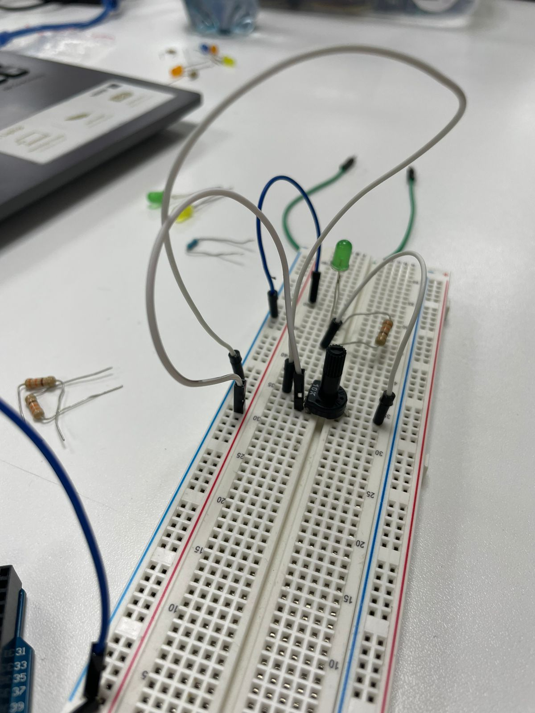
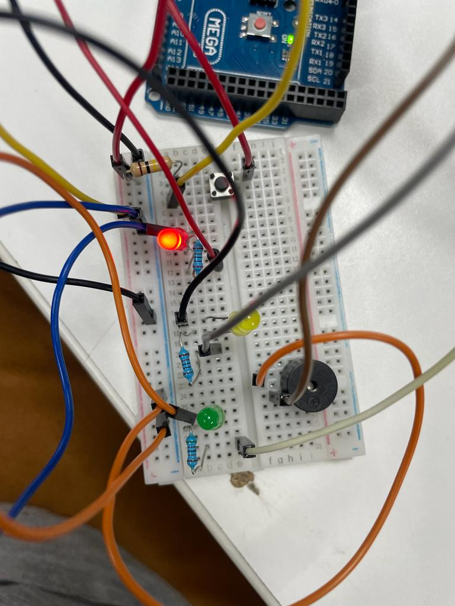

|  |
Mi nombre es Arturo Fernández Tengo 27 años y estoy en 7mo ciclo de PMD. A pesar de no tener experiencia profesional en la carrera q estoy estudiando, he podido desempeñarme en rubros como el entretenimiento. Puntualmente en la producción de fiestas “after” de música electrónica bajo mi marca AfterBeats. Actualmente me encuentro en la creación de mi marca de burgers bajo el modelo de foodtruck. Lleva el nombre Pasa Pe. Es un concepto de hamburguesas artesanales preparadas a base de asado de tira. Soy una persona que disfruta mucho las nuevas experiencias como también las oportunidades de viajar. |
|  | MISIÓN 1 Disfrute bastante de esta misión porque me permitió conocer un lado distinto de mis compañeras. Tuvimos una conversación extensa donde compre étimos diferentes gustos, pasatiempos, etc. Después de la charla descubrimos que todos coincidíamos en un gusto en particular: los viajes, poder conocer distintos lugares y su cultura. |
|  | MISIÓN 2 En esta misión pude conocer más sobre la igualdad de género y como esta brecha afecta a las minorías. Me fue interesante informarme sobre las acciones que grandes empresas han tomado con la finalidad de reducir esta brecha |
|  | MISIÓN 3 Arenero para gatos con vascula integrada que avise al dueño cuando sea tiempo de cambiar la arena. La idea es crear un sensor con una váscula que se pueda adaptar a los areneros comunes con la finalidad de que los dueños puedan escuchar una alerta cuando sea el momento de renovar la arena. Cuando la váscula detecte que se ha excedido el peso programado por encima del promedio (ejm. +20 kg), esta emitirá una alerta sonora avisando al dueño que es momento de renovar el arenero |
|  | MISIÓN 4 En esta misión vimos diferentes fuentes de energias que alimentaban desde un componente led hasta un foco convencional. También pude identificar los diferentes voltajes dependiendo de las fuentes de alimentación(batería 9v, panel solar y pila de reloj). |
|  | MISIÓN 5 En esta misión conocimos las diferentes resistencias que existen. Estas resistencias servían para conectar el protoboard con las luces LED, también pudimos medir las resistencias y conocer más de ello. |
|  | MISIÓN 6 En esta misión construimos circuitos para obtener un semáforo con 3 luces LED. Fue muy interesante este ejercicio porque no solo logramos una secuencia para el semáforo sino que podiamos activar el ciclo a traves de un iniciador. Por último le creamos una nota musical que iba acorde las luces del semáforo. |